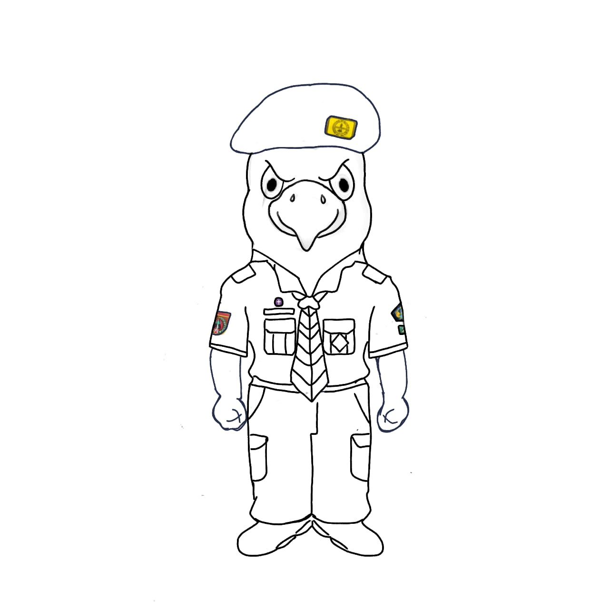
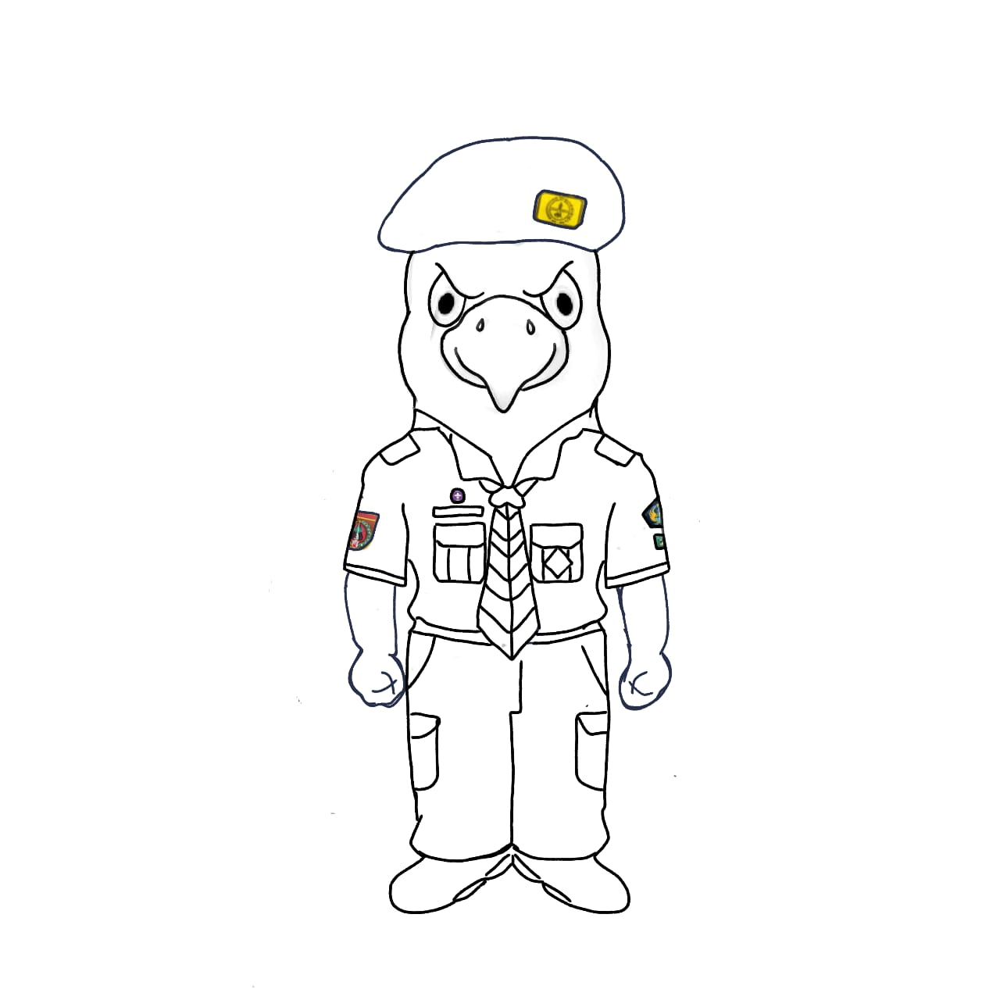
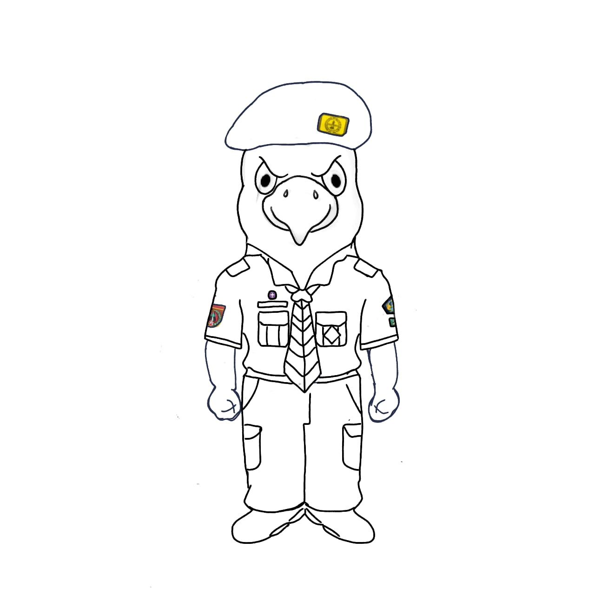

MASKOT
Kriyashil

 

Kriyashil

Kriyashil: Gabungan dari kata "Kriya" yang berarti aktivitas atau karya dan "Shil" yang berarti berbakat, menggambarkan semangat dalam berkarya dengan keahlian dan bakat.
Burung elang sebagai maskot Pramuka memiliki makna filosofi yang mendalam. Elang, dengan sifat-sifatnya yang khas, mencerminkan nilai-nilai dan karakteristik yang dijunjung tinggi dalam gerakan Pramuka.
1. Ketajaman Penglihatan: Mata tajam elang mencerminkan ketajaman pengamatan dan kejelian, mengajarkan para Pramuka untuk selalu waspada terhadap lingkungan sekitar. Ini merangsang pengembangan keterampilan observasi, kepekaan terhadap perubahan, dan kebijaksanaan dalam mengambil keputusan.
2. Ketinggian dan Visi Luas: Dengan sayap yang luas dan kemampuan terbang tinggi, elang mengajarkan Pramuka untuk memiliki visi yang luas dan pandangan jauh ke depan. Hal ini mencerminkan semangat untuk selalu berpikir jangka panjang, merencanakan masa depan, dan memiliki tekad untuk mencapai tujuan yang tinggi.
3. Kemandirian dan Kebebasan: Elang seringkali tinggal di daerah terbuka dan memiliki kebebasan untuk menjelajahi langit. Ini mencerminkan nilai kemandirian dan semangat petualangan Pramuka, mengajak mereka untuk menjelajahi dunia, belajar dari pengalaman, dan berkembang sebagai individu yang mandiri.
4. Kepemimpinan dan Tanggung Jawab: Sebagai predator puncak, elang mencerminkan kepemimpinan yang kuat dan tanggung jawab terhadap ekosistemnya. Pramuka diilhami untuk menjadi pemimpin yang bertanggung jawab, memimpin dengan integritas, dan berkontribusi positif dalam masyarakat.
5. Kesetiaan dan Solidaritas: Elang adalah binatang yang setia terhadap pasangannya. Ini menggambarkan nilai-nilai solidaritas dan kesetiaan di dalam gerakan Pramuka. Para anggota Pramuka diharapkan untuk saling mendukung, bekerja sama, dan menjaga kebersamaan dalam setiap kegiatan.
Dengan mengambil inspirasi dari sifat dan perilaku elang, maskot Pramuka mengajarkan nilai-nilai seperti kebijaksanaan, ketangguhan, kemandirian, dan kebersamaan. Dengan menginternalisasi filosofi ini, Pramuka diharapkan dapat tumbuh menjadi individu yang berkarakter, bijaksana, dan berkontribusi positif bagi masyarakat.
@lutfan_017